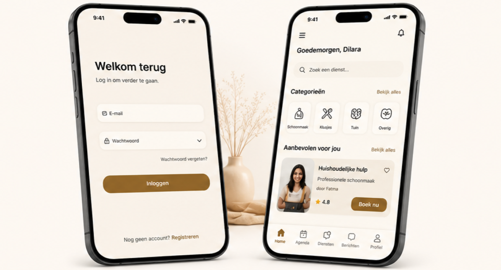
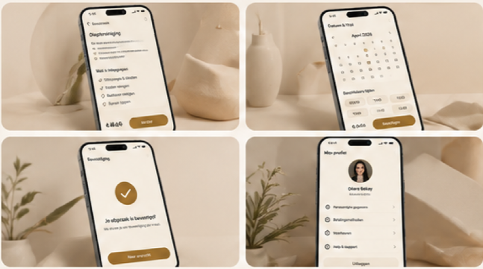

Een gebruiksvriendelijke interface voor een mobiele applicatie — met de nadruk op toegankelijkheid, heldere navigatie en een consistente visuele taal.

De Uitdaging
De kern van dit project was het ontwerpen van een interface die door zoveel mogelijk mensen gebruikt kan worden — ongeacht leeftijd of digitale ervaring. Dat betekende bewuste keuzes over lettergroottes, contrastverhouding en de grootte van klikbare elementen.
Naast toegankelijkheid was consistentie het tweede grote thema: elk scherm moest direct aanvoelen als onderdeel van dezelfde app.
Werkproces
Persona's opgesteld om de gebruiker concreet te maken. Wie is de app voor? Wat zijn hun behoeften?
De kern-flows uitgetekend: hoe beweegt een gebruiker van A naar B? Welke stappen zijn er nodig?
Alle schermen uitgewerkt met een volledig component-systeem. Kleur, typografie en iconografie bepaald.
Ontwerp gedeeld voor peer review. Feedback verwerkt en het ontwerp verder aangescherpt.
Eindresultaat
Het eindontwerp bestaat uit meer dan tien volledig uitgewerkte schermen met een eigen design system. Elk component — van knop tot navigatiebalk — volgt dezelfde regels.
De toegankelijkheidscheck wees uit dat alle tekst-kleur combinaties voldoen aan WCAG AA, en alle interactieve elementen zijn minimaal 44×44px groot.

Wat ik leerde
Contrast en lettergrootte zijn niet alleen esthetisch — ze bepalen of iemand de app überhaupt kan gebruiken.
Een duidelijke flow tekenen vóór je begint met het visuele design bespaart veel aanpassingen achteraf.
Een design system vanaf het begin opzetten maakt elk volgend scherm sneller en consistenter.